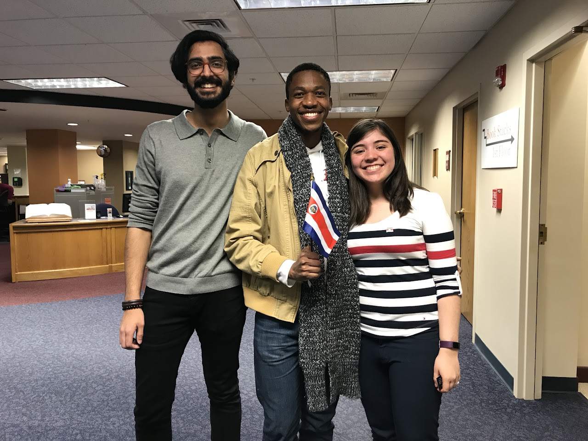

Live → Blog
March 27, 2019

A cloud of gray covers the sun outside the window here in Waverly, Iowa. Despite the picture forming in your mind at the moment from the gray clouds, I feel really blessed to have all the people in my life. Just this time away in Iowa from the busy California and all its stresses, is possible because of a generous invitation from my friends. On my way to here I had a 24 hour stopover in Minneapolis-St. Paul and spent all of it with my best friend. The friends I am visiting here are not on break, they have classes and work shifts to attend to - real responsibilities. I spend most of my days writing and reading. I spend a significant amount also on WhatsApp talking to friends since it is the only online channel I have to connect with my friends and family since I left mainstream social media 4 months ago. Yesterday while going through the stories of my friends, I got roped into a gratitude exercise where participants had to write something about one another. The exercise allowed me the opportunity to reflect on the significance of the presence of certain individuals in my life. It also gave me insight into what I mean to those close to me. I feel moved to share those reviews below and I will offer some closing reflections at the end of the post:
"Ramarea, you are one considerate, kind, smart and talented person I know. I appreciate how you easily connect with people and allow others to shine in your presence. I appreciate how you hold people accountable when it comes to their dreams (I'm out here working hard to ensure I achieve what I wrote in your journal). You're incredible and I'm forever grateful that our paths crossed when they did. You added an extra touch to my experience in Kigali and I could not have asked for anything better. May you never change, remain as grounded, and keep inspiring people."
"I never knew what a 'one of a kind' means until I met you. You have your own ways of doing and thinking about literally everything, confidently. And with that I find myself always striving to be and express me as I am. You have been with me through the toughest times even with out distance barrier and that is simply amazing. I have found a true friend in you. Hopefully the next time I see you, I would be visiting you instead."
"You are and I hope you will always be one of the realest people in my life. There in none like you my crazy friend, kana ke kgona go sa robala seboko seboko sa tlhogo ya gago se kelemile. Thank you for always picking me up when I'm down. I sometimes feel like you know me more than I know myself. Bathong, you can never go wrong with this guy in your life."
"Tumi! [X]'s godfather. When I count my blessings I count you twice! 16 years of friendship. You're such an influential person my friend. I cherish every moment spent with you, the laughter, fruitful conversations, everything. My maid of honor. I love you my friend."
"Tumi! Young but hei, you can learn a lot from him. My husband calls him first born, my kids call him big brother. I call him mentor, and good dance *laughing with tears emojis*"
"Tumi! I think it's funny how we don't remember how and when we became so close because you used to intimidate me so much. You are one of the few friends I have that I am certain will be around for the long run. I live for our heart to heart conversations. Thank you."
"Mmh! Where do we start with you Mr? We crossed paths in an amazing way: village girl and village boy who just got into the city and of course that made us click. You have been nothing but amazing. Funny how we are miles and miles away but I know that I can count on you whenever I need you. A true friend indeed, jolly guy, a guy that challenges me and makes me see things differently. [He] made me realize you can achieve all your dreams only if you put your mind to it. You don't have to have it all but if you want it so bad you will get it. Thank you man. I celebrate and appreciate you and wish all the best life could offer you."
"Tumi! SSSS wouldn't have been a great experience without you. You've always been my best friend le ha re sa bue every day. I value our friendship and your advice is always the best. Thank you for everything you have done for me. May God richly bless you with all your desires. I'm so proud of you."
"You're the first brother I've had outside my family. Only driven by the desire to succeed and change the future for yourself and your offsprings. We don't judge each other but when we disagree it almost seems like a volcanic eruption. The good thing is that never keeps us apart for long. We don't talk much these days but we both know it's because we are busy chasing our dreams <3"
"My friend from goo lowe! Yes it has been a decade and a year since we met. I'm glad we were not only classmates but we turned out to be good friends. Thank you for always pushing me to put more effort on my studies. Thank you for sacrificing some of your weekends to help us with our studies. May God bless you abundantly G-Ram wa mrepa. Tsala e ko mahatshing a a tsididi. Monna go monate go tlotlela batho gore ke na le tsala e e tsenang kwa Stanford. I'm proud of you man. I love you brother! <3"
"Few people have the privilege of having such a supportive friend. I am beyond lucky and incredible fortunate to have you in my life. I couldn't have done [it] with without you. Thanks for the encouragement. You always make me feel special <3"
"Your work ethic and love for yourself and love for others is admirable. You are always the much needed individual to light up the room. Totally moved by your ability to lead and influence even from your silence. Can't wait to see you in another continent."
What an outpour of kindness! That my friends have such nice things to say about me is heartwarming, to say the least. It is also insightful to reflect on my impact on the world around me through their eyes. Some of the comments remind me that some aspects of my character that have become more pronounced recently as a result of the blessings that have continued to flow into my life, such as encouraging and supporting my people, have always been there. Others validate some of the changes that I have made in my life, such as choosing the "lead from the back" approach more often as it is more congruent with my personality and preferences. As you can imagine, all this investment that I do in my tribe is because others who consider me a part of their tribe have invested in me at some point. I remain grateful to all those who have, and continue to believe in me. Most of them may be found on my Gratitude Wall. My use of the word tribe in this paragraph is to mean all the people, from family to friends, colleagues to acquaintances, whose success matters to me. These comments reinvigorate my commitment to the advancement of my tribe. It is my hope that they too will pay it forward and invest in the advancement of their tribes until one day all of our tribes are advanced. There is enough advancement to go around for everyone. So I look outside the window, recall the two phone conversations from earlier in the day, one with my special friend in Cape Town and the other with my friend in London, and feel really blessed in life right now. May the river of blessings never run dry in my life and may it spill over to flood the rivers of blessings of my tribe!
← Return to Blog